Responsive image specimen
Local assets only. Inspect currentSrc to see the browser's choice. 70 exported, 26 skipped, 0 failed.
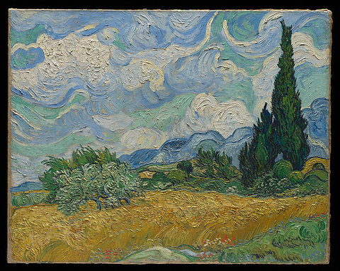
Wheat Field with Cypresses — Vincent van Gogh. CC0-1.0 · Source
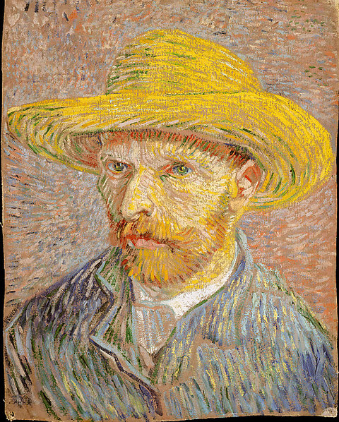
Self-Portrait with a Straw Hat (obverse: The Potato Peeler) — Vincent van Gogh. CC0-1.0 · Source
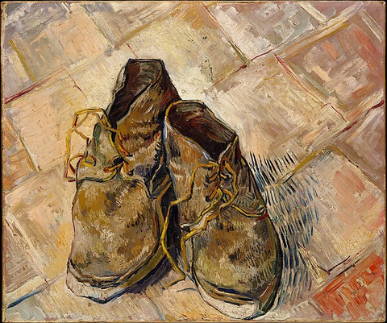
Shoes — Vincent van Gogh. CC0-1.0 · Source
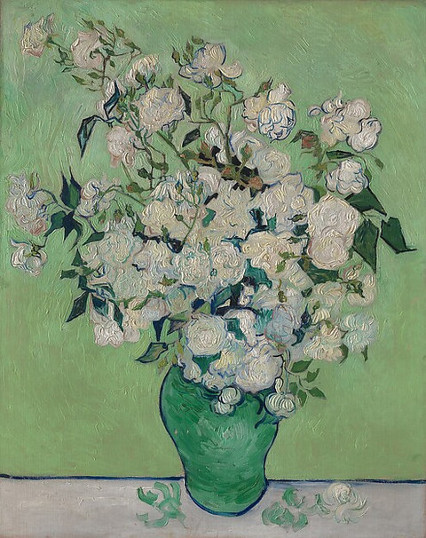
Roses — Vincent van Gogh. CC0-1.0 · Source
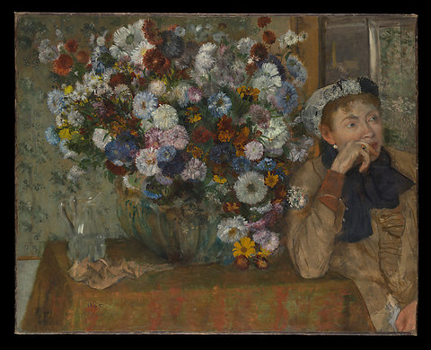
A Woman Seated beside a Vase of Flowers (Madame Paul Valpinçon?) — Edgar Degas. CC0-1.0 · Source
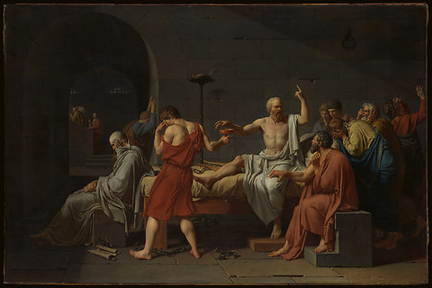
The Death of Socrates — Jacques Louis David. CC0-1.0 · Source
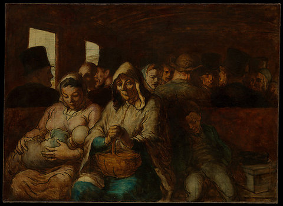
The Third-Class Carriage — Honoré Daumier. CC0-1.0 · Source
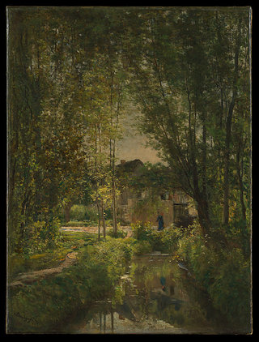
Landscape with a Sunlit Stream — Charles-François Daubigny. CC0-1.0 · Source
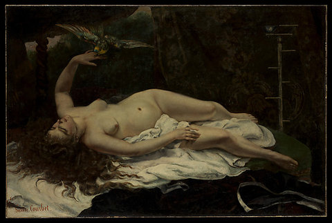
Woman with a Parrot — Gustave Courbet. CC0-1.0 · Source
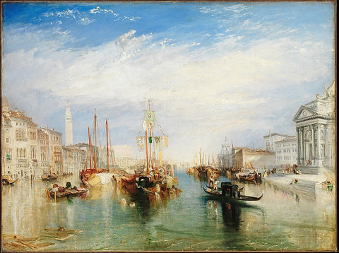
Venice, from the Porch of Madonna della Salute — Joseph Mallord William Turner. CC0-1.0 · Source
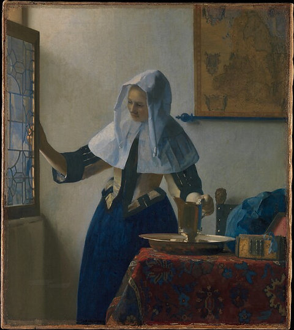
Young Woman with a Water Pitcher — Johannes Vermeer. CC0-1.0 · Source
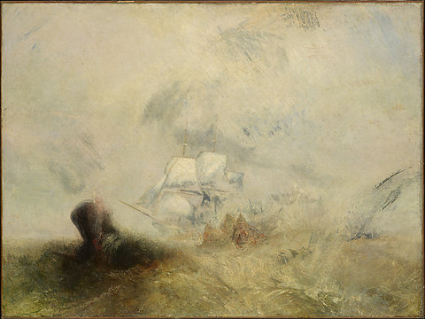
Whalers — Joseph Mallord William Turner. CC0-1.0 · Source